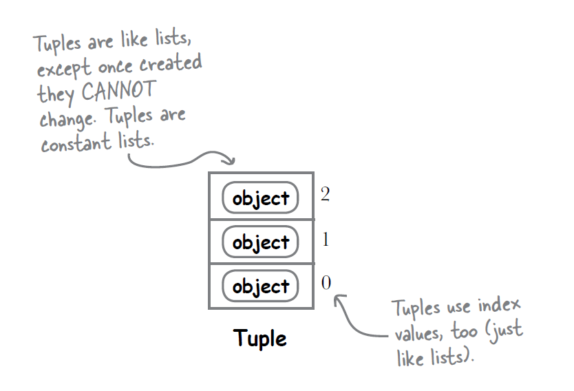

Table of contents
{: .text-delta } 1. TOC {:toc}Python (Tuples)
Tuples are collections of items where items have serial numbers, but they can't be changed - No add/remove/reorder. They can have duplicates. Tuples are like a necklace. Once you create them you can't change them. You can't add/remove items. You can't reorder items.
Technically they are ordered collections of immutable objects. Phew!
Python has 4 built-in data types - LSTD - List, Set, Tuple, Dictionary.
Tuples and lists both store items, but there are key differences. **Tuples** can't be changed once created; you can't add, remove, or modify items. **Lists** can be changed; you can add, remove, or modify items. Both can have duplicate items.
Tuples vs. Lists

Tuples and lists both store items, but there are key differences. **Tuples** can't be changed once created; you can't add, remove, or modify items. **Lists** can be changed; you can add, remove, or modify items. Both can have duplicate items.
# Tuples can have duplicates
my_tuple = (1, 2, 2, 3, 4, 4)
print(my_tuple) # Output: (1, 2, 2, 3, 4, 4)
# Lists can also have duplicates
my_list = [1, 2, 2, 3, 4, 4]
print(my_list) # Output: [1, 2, 2, 3, 4, 4]
Tuples use `()`, and lists use `[]`. Use tuples for fixed data and lists for data that changes.
Features of Tuples
Ordered and Indexed
Tuple items have serial numbers(Index). And they stay the same. The first item stays first, the second stays second, and so on.
I.e., Tuples are 'ordered'
my_tuple = (1, 2, 3)
print(my_tuple[0]) # Output: 1
print(my_tuple[1]) # Output: 2
Immutable(Rigid)
Once created, you can't change the items in a tuple. This means you can't add, remove, or replace items in a tuple. This makes tuples very reliable for storing data that shouldn't change.
my_tuple = (1, 2, 3)
# Trying to change a value will cause an error
my_tuple[0] = 10 # Error: TypeError: 'tuple' object does not support item assignment
# Trying to add an item will cause an error
my_tuple.append(4) # Error: AttributeError: 'tuple' object has no attribute 'append'
# Trying to remove an item will cause an error
my_tuple.remove(2) # Error: AttributeError: 'tuple' object has no attribute 'remove'
Hetro..Hetrogenxblabla - urrgh! All datatypes welcome!
Tuples can hold items of different types, including other tuples.
mixed_tuple = (1, "hello", 3.14, (2, 4))
print(mixed_tuple) # Output: (1, 'hello', 3.14, (2, 4))
Tuples take less memory than others
Creating Tuples
There are a few ways to create tuples in Python:
Using Parentheses ()
# Creating an empty tuple
empty_tuple = ()
# Creating a tuple with items
my_tuple = (1, 2, 3)
Without Parentheses
You can also create a tuple by simply separating items with commas.
my_tuple = 1, 2, 3
Using the tuple() Function
You can convert other data types (like lists) to tuples using the tuple() function.
my_list = [1, 2, 3]
my_tuple = tuple(my_list)
Common Errors
Trying to Modify a Tuple
Since tuples are immutable, trying to change an item will result in an error.
my_tuple = (1, 2, 3)
my_tuple[0] = 10 # Error: TypeError: 'tuple' object does not support item assignment
Forgetting Comma in Single-Item Tuples
A tuple with one item needs a comma, otherwise, Python will not recognize it as a tuple.
single_item_tuple = (1,)
print(type(single_item_tuple)) # Output: <class 'tuple'>
not_a_tuple = (1)
print(type(not_a_tuple)) # Output: <class 'int'>
Examples of Using Tuples
Storing Coordinates
Tuples are great for storing fixed sets of data like coordinates.
coordinates = (10.0, 20.0)
print(coordinates) # Output: (10.0, 20.0)
Returning Multiple Values from Functions
Functions can return multiple values using tuples.
def get_name_and_age():
name = "Alice"
age = 30
return name, age
name, age = get_name_and_age()
print(name) # Output: Alice
print(age) # Output: 30
Using Tuples as Dictionary Keys
Because tuples are immutable, they can be used as keys in dictionaries.
location_data = {}
location = (10.0, 20.0)
location_data[location] = "Location 1"
print(location_data) # Output: {(10.0, 20.0): 'Location 1'}
Did you know this?
"Hello, %s! You're %s years old." % ("Kim John", 150)
Summary
- Tuples: Like lists but can't modify.
- Create: Using
(), commas, ortuple(). - Features: Ordered, immutable, and can hold different data types.
- Use Cases: Fixed collections, multiple return values, dictionary keys.
Tuples are useful to put constant items in a group. They are easy to understand and make code easy to read.
Test your knowledge
Highlight the answer section to reveal!
Question - Tuple Indexing
What will be the output of the following statement?
my_tuple = (1, 2, 3, 4, 5)
print(my_tuple[-1])
Answer: 5
Question - Tuple Containing a List
What will happen if you try to include a list inside a tuple?
my_tuple = (1, [2, 3], 4)
my_tuple[1][0] = 5
print(my_tuple)
Answer: (1, [5, 3], 4)
Question - Tuple Concatenation
What will be the output of the following statement?
tuple1 = (1, 2)
tuple2 = (3, 4)
print(tuple1 + tuple2)
Answer: (1, 2, 3, 4)
Question - Immutable Tuples
What will happen if you try to change an element of a tuple?
my_tuple = (1, 2, 3)
my_tuple[0] = 4
Answer: TypeError: 'tuple' object does not support item assignment
Question - Single-Item Tuple
How do you create a tuple with a single item?
single_item_tuple = (1)
print(type(single_item_tuple))
Answer: <class 'int'>
Question - Tuple Methods
Which method would you use to find the index of a value in a tuple?
my_tuple = (10, 20, 30, 40)
print(my_tuple.index(30))
Answer: 2
Question - Tuple Length
What will be the output of the following statement?
my_tuple = (1, 2, 3, 4, 5)
print(len(my_tuple))
Answer: 5
Question - Nested Tuples
What will be the output of the following statement?
nested_tuple = (1, (2, 3), 4)
print(nested_tuple[1])
Answer: (2, 3)
Question - Tuple Slicing
What will be the output of the following statement?
my_tuple = (1, 2, 3, 4, 5)
print(my_tuple[1:3])
Answer: (2, 3)
Question - Tuple Containment
What will be the output of the following statement?
my_tuple = (1, 2, 3, 4, 5)
print(3 in my_tuple)
Answer: True
Question - Tuple Unpacking
What will be the output of the following statement?
my_tuple = (1, 2, 3)
a, b, c = my_tuple
print(a, b, c)
Answer: 1 2 3
Question - Tuple Multiplication
What will be the output of the following statement?
my_tuple = (1, 2, 3)
print(my_tuple * 2)
Answer: (1, 2, 3, 1, 2, 3)
Question - Tuple Conversion
What will be the output of the following statement?
my_list = [1, 2, 3]
my_tuple = tuple(my_list)
print(my_tuple)
Answer: (1, 2, 3)
Question - Tuple with Mixed Types
What will be the output of the following statement?
my_tuple = (1, "hello", 3.14)
print(my_tuple[1])
Answer: hello
Question - Tuple Indexing
What will be the output of the following statement?
my_tuple = (1, 2, 3, 4, 5)
print(my_tuple[-1])
Answer: 5
Question - Tuple Containing a List
What will happen if you try to include a list inside a tuple?
my_tuple = (1, [2, 3], 4)
my_tuple[1][0] = 5
print(my_tuple)
Answer: (1, [5, 3], 4)
Question - Tuple Concatenation
What will be the output of the following statement?
tuple1 = (1, 2)
tuple2 = (3, 4)
print(tuple1 + tuple2)
Answer: (1, 2, 3, 4)
Question - Immutable Tuples
What will happen if you try to change an element of a tuple?
my_tuple = (1, 2, 3)
my_tuple[0] = 4
Answer: TypeError: 'tuple' object does not support item assignment
Question - Single-Item Tuple
How do you create a tuple with a single item?
single_item_tuple = (1)
print(type(single_item_tuple))
Answer: <class 'int'>
Question - Tuple Methods
Which method would you use to find the index of a value in a tuple?
my_tuple = (10, 20, 30, 40)
print(my_tuple.index(30))
Answer: 2
Question - Tuple Length
What will be the output of the following statement?
my_tuple = (1, 2, 3, 4, 5)
print(len(my_tuple))
Answer: 5
Question - Nested Tuples
What will be the output of the following statement?
nested_tuple = (1, (2, 3), 4)
print(nested_tuple[1])
Answer: (2, 3)
Question - Tuple Slicing
What will be the output of the following statement?
my_tuple = (1, 2, 3, 4, 5)
print(my_tuple[1:3])
Answer: (2, 3)
Question - Tuple Containment
What will be the output of the following statement?
my_tuple = (1, 2, 3, 4, 5)
print(3 in my_tuple)
Answer: True
Question - Tuple Unpacking
What will be the output of the following statement?
my_tuple = (1, 2, 3)
a, b, c = my_tuple
print(a, b, c)
Answer: 1 2 3
Question - Tuple Multiplication
What will be the output of the following statement?
my_tuple = (1, 2, 3)
print(my_tuple * 2)
Answer: (1, 2, 3, 1, 2, 3)
Question - Tuple Conversion
What will be the output of the following statement?
my_list = [1, 2, 3]
my_tuple = tuple(my_list)
print(my_tuple)
Answer: (1, 2, 3)
Question - Tuple with Mixed Types
What will be the output of the following statement?
my_tuple = (1, "hello", 3.14)
print(my_tuple[1])
Answer: hello
Question - Tuple Assignment
What will happen when you try to reassign a tuple variable?
my_tuple = (1, 2, 3)
my_tuple = (4, 5, 6)
print(my_tuple)
Answer: (4, 5, 6)
Question - Tuple Immutability with List
What will be the output of the following statement?
my_tuple = (1, [2, 3], 4)
my_tuple[1].append(5)
print(my_tuple)
Answer: (1, [2, 3, 5], 4)
Examples
def biography_list(people):
# Iterate over each "person" in the given "people" list of tuples.
for item in people:
# This is the highlight of the code
name, age, profession = item # The tuple gets assigned into 3 variables
# Format the required sentence and place the 3 variables
# in the correct placeholders using the .format() method.
print("{} is {} years old and works as {}".format(name, age, profession))
# Call to the function:
biography_list([("Dilwali", 30, "a Dulhania"), ("Raj", 35, "nam to suna hi hoga"), ("Maria", 25, "oh maria")])
# Output:
# Ira is 30 years old and works as a Chef
# Raj is 35 years old and works as a Lawyer
# Maria is 25 years old and works as an Engineer